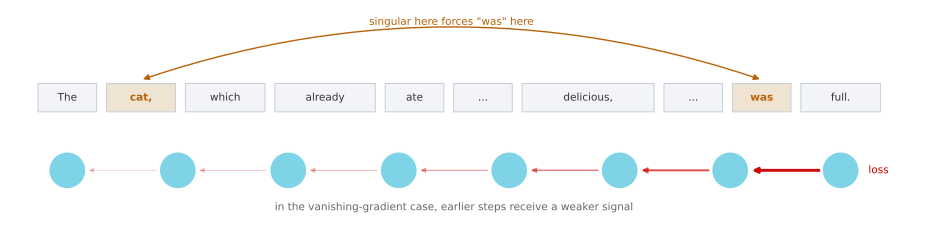
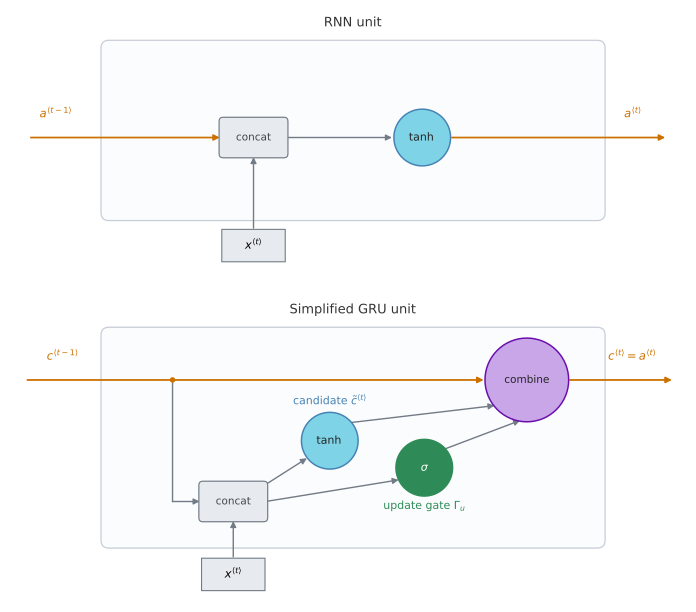
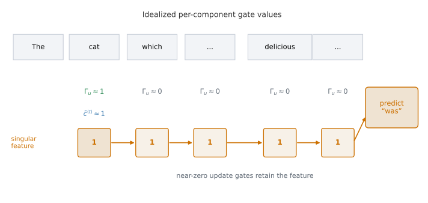
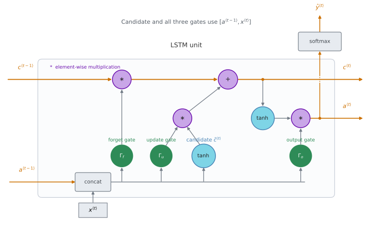
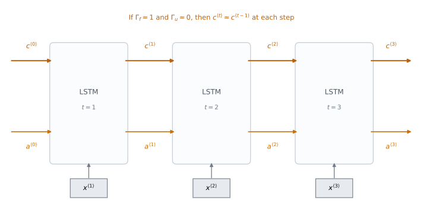

Vanishing Gradients, GRUs, and LSTMs
deep-learning
sequence-models
rnn
gru
lstm
vanishing-gradients
Why a basic RNN cannot hold information across a long sentence, and how GRUs and LSTMs mitigate the problem.
You have seen how RNNs work, how they apply to problems like named entity recognition and language modeling, and how backpropagation trains them. One of the problems with the basic RNN algorithm is that it runs into vanishing gradients.
Vanishing Gradients with RNNs
Take a language modeling example. Consider this sentence.
The cat, which already ate a bunch of food that was delicious, …, was full.
To be consistent, because cat is singular, it has to be “the cat was”. If instead the sentence had been about cats, it would read
The cats, which already ate a bunch of food that was delicious, …, were full.
So it should be “cat was” or “cats were”. This is an example of language having very long-term dependencies, where a word much earlier can affect what needs to come much later in the sentence. The basic RNN seen so far is not very good at capturing dependencies like this.
To see why, remember the vanishing gradients problem from training very deep networks. In a very deep network, say 100 layers or more, you carry out forward propagation from left to right and then backpropagation. The gradient of the loss at a later output can have a very hard time propagating back to affect the weights of the earlier layers.
An RNN has the same problem. Forward propagation goes from left to right and backpropagation goes from right to left, and it can be quite difficult, because of the same vanishing gradients problem, for the errors associated with the later time steps to affect the computations that are earlier.
In practice this means it might be difficult to get the network to realize that it needs to memorize whether it saw a singular noun or a plural noun, so that later in the sequence it can generate either was or were accordingly. In English the material in the middle can be arbitrarily long, so you might need to hold on to the singular or plural fact for a very long time before you get to use it.
Because of this, the basic RNN model has many local influences. The output \(\hat{y}^{\langle 3 \rangle}\) is mainly influenced by values close to \(\hat{y}^{\langle 3 \rangle}\), and a value somewhere in the middle is mainly influenced by inputs somewhat close to it. It is difficult for an output to be strongly influenced by an input that was very early in the sequence, because whatever the output was, right or wrong, it is very hard for the error to backpropagate all the way to the beginning of the sequence and modify how the network does its earlier computations. Without addressing this, RNNs tend not to be very good at capturing long-range dependencies.
Exploding Gradients
The discussion so far has focused on vanishing gradients, but when training very deep networks there are also exploding gradients, where during backpropagation the gradients do not just decrease exponentially but may increase exponentially with the number of layers you go through.
Vanishing gradients tend to be the bigger problem with training RNNs. When exploding gradients happen, though, they can be catastrophic, because the exponentially large gradients can make the parameter updates numerically unstable.
Exploding gradients are easier to spot, because the parameters can blow up. You will often see NaNs, meaning not a number, as a result of numerical overflow. If you do see them, one safeguard is gradient clipping. You measure a gradient vector or its norm, and if it exceeds a chosen threshold, you rescale or clip it. This is a robust way to control exploding gradients, although the threshold still needs to be chosen sensibly.
Vanishing gradients are much harder to solve, and that is the subject of the rest of this page. An RNN processing data over 1,000 time steps, or over 10,000 time steps, is basically a 1,000 layer or a 10,000 layer network, so it runs into these problems too.
Review Questions
1. In “The cat, which already ate a bunch of food that was delicious, was full”, which two words have to agree, and why is that hard for a basic RNN?
Answer
cat and was have to agree in number. It is hard because the material between them can be arbitrarily long, so the network would have to memorize the singular fact for many time steps. In the vanishing-gradient case, the teaching signal becomes progressively weaker as it passes backward through those steps, so the early computations barely get corrected.
1. Why is an RNN over 10,000 time steps described as being like a 10,000 layer network?
Answer
Because backpropagation through time unrolls one recurrent transition per time step, a 10,000-step sequence creates a gradient path up to 10,000 transitions deep. Unlike 10,000 distinct feed-forward layers, those transitions share recurrent parameters, but the long computational path can still produce the same kind of vanishing or exploding gradient behavior.
1. Which problem is easier to detect, and what is the standard fix for it?
Vanishing gradients, fixed by gradient clipping
Exploding gradients, fixed by gradient clipping
Exploding gradients, fixed by a gated unit
Vanishing gradients, fixed by a smaller learning rate
Answer
b. Exploding gradients announce themselves, because the parameters blow up and you see NaNs from numerical overflow. Rescaling any gradient vector above a threshold, which is gradient clipping, is a robust fix. Vanishing gradients are the harder problem and are what gated units address.
1. You are training an RNN and find that your weights and activations are all taking the value NaN, so you have a vanishing gradient problem. True or false?
Answer
False. NaN is what a numerical overflow leaves behind, so the values grew without bound, which is the signature of exploding gradients. Vanishing gradients are much quieter and show up as a failure to learn long-range structure rather than as bad numbers. Gradient clipping is the fix for the exploding case.
Gated Recurrent Unit
The gated recurrent unit is a modification to the RNN hidden layer that makes long-range connections easier to learn and mitigates the vanishing gradient problem. The equations below follow Chung, Gulcehre, Cho, and Bengio (2014). Cho, van Merriënboer, Bahdanau, and Bengio (2014), the other 2014 paper cited by the course, discusses the gated RNN encoder-decoder in its neural machine translation analysis.
You have already seen the formula for the activation at time \(t\) of an RNN, which is the activation function applied to \(W_a\) times the previous activation and the current input, plus a bias.
\[\color{#4682B4}{a^{\langle t \rangle} = \tanh\!\left(W_a\,[\,a^{\langle t-1 \rangle},\, x^{\langle t \rangle}\,] + b_a\right)}\]
Drawn as a picture, the RNN unit is a box that takes in \(a^{\langle t-1 \rangle}\) and \(x^{\langle t \rangle}\), puts them through a linear calculation and then a tanh, and computes the output activation \(a^{\langle t \rangle}\), which might also be passed to a softmax to output \(\hat{y}^{\langle t \rangle}\).
The course denotes the GRU hidden state by \(c\) to emphasize its role as memory. This is not a separate cell state. A GRU has one recurrent state, which can remember, for example, whether cat was singular or plural and keep that information available much further into the sentence.
At time \(t\) that state has value \(c^{\langle t \rangle}\). The GRU activation \(a^{\langle t \rangle}\) is the same value. The course keeps both symbols so that the notation transitions smoothly to the LSTM, where the cell state and activation are different.

These are the equations that govern the computation of the simplified GRU shown above. The colors match the diagram. Blue identifies candidate calculations, green identifies gates, purple identifies element-wise combinations, and orange identifies the exposed state. At every time step you consider replacing the recurrent state with a candidate value \(\tilde{c}^{\langle t \rangle}\).
\[\color{#4682B4}{\tilde{c}^{\langle t \rangle} = \tanh\!\left(W_c\,[\,c^{\langle t-1 \rangle},\, x^{\langle t \rangle}\,] + b_c\right)}\]
Then comes the important idea of the GRU, which is a gate, written \(\Gamma_u\), where \(u\) stands for update. Each entry of this gate vector lies between 0 and 1. It is useful to begin with the idealized cases 0 and 1, although in practice the sigmoid produces continuous values between them.
\[\color{#2E8B57}{\Gamma_u = \sigma\!\left(W_u\,[\,c^{\langle t-1 \rangle},\, x^{\langle t \rangle}\,] + b_u\right)}\]
The sigmoid output is always between 0 and 1. When its input has sufficiently large magnitude, the output approaches 0 or 1, but values near the sigmoid’s center are not close to either extreme. The binary view is therefore a useful limiting-case intuition, not a claim that learned gates are usually binary. The letter \(\Gamma\) was chosen because it is the Greek letter G, as in G for gate.
The gate then decides how much the candidate replaces the previous state.
\[ \color{#6A0DAD}{ \begin{array}{r c c c c c} c^{\langle t \rangle} = & \Gamma_u & * & \tilde{c}^{\langle t \rangle} + \left(1 - \Gamma_u\right) & * & c^{\langle t-1 \rangle} \\[-0.15em] & & \mkern8mu\nwarrow & \lower0.18em\hbox{\(\scriptstyle\text{element-wise multiplication}\)} & \nearrow\mkern8mu & \end{array} } \]
\[\color{#CC7000}{a^{\langle t \rangle} = c^{\langle t \rangle}}\]
Notice what the gate does. If \(\Gamma_u = 1\), the equation sets the new value of \(c^{\langle t \rangle}\) equal to the candidate, so go ahead and update. If \(\Gamma_u = 0\), the first term vanishes, the second term becomes \(1 * c^{\langle t-1 \rangle}\), and the state keeps its old value.
NoteElement-wise multiplication
The asterisk in these equations is element-wise multiplication, not matrix multiplication. The correction published alongside the lecture makes this explicit for the last line, \(c^{\langle t \rangle} = \Gamma_u * \tilde{c}^{\langle t \rangle} + (1 - \Gamma_u) * c^{\langle t-1 \rangle}\).
How the Gate Holds a Memory
For one idealized state component, use 1 to represent a singular subject and 0 to represent a plural subject. The GRU can carry that value forward so that much later in the sentence it still helps the model choose was.
The job of \(\Gamma_u\) is to decide when to update the value. When you see the phrase “the cat”, you know you are talking about a new concept, the subject of the sentence, and that is a good time to update the bit. Later, once “the cat was full” is done, you no longer need to remember it and can forget it.

This is why the GRU helps with vanishing gradients. If the quantity inside the sigmoid is sufficiently negative, the update gate is near 0. The update equation is then close to \(c^{\langle t \rangle} = c^{\langle t-1 \rangle}\), so the state can be maintained with little change across many time steps. In the idealized case \(\Gamma_u=0\), the copy is exact. This additive path also gives the backward signal a shortcut that avoids repeatedly passing through a bounded candidate activation.
Vectors, Not Single Bits
In these equations \(c^{\langle t \rangle}\) can be a vector. If you have a 100-dimensional hidden activation value, then \(c^{\langle t \rangle}\) is 100-dimensional, \(\tilde{c}^{\langle t \rangle}\) has the same dimension, and \(\Gamma_u\) has the same dimension too. In that case the asterisks really are element-wise multiplication.
If the gate is a 100-dimensional vector, it is a continuous vector of 100 soft controls. Each entry tells the GRU how strongly to update the corresponding state dimension. The idealized values 0 and 1 mean hold and replace, while intermediate values blend the old state and the candidate.
The element-wise multiplications tell the GRU which state dimensions to update at every time step. One component might encode evidence about whether the subject is singular or plural, while another tracks that the sentence is about food. These representations are learned continuous features, not literal hand-assigned bits.
Reset Gate in the GRU
What is above is a simplified GRU. A standard GRU also has \(\Gamma_r\), normally called the reset gate. The course calls it the relevance gate because it controls how relevant \(c^{\langle t-1 \rangle}\) is when computing the candidate. The standard name emphasizes the limiting case. When \(\Gamma_r\) is near 0, the candidate calculation can reset the influence of the previous state.
\[\color{#2E8B57}{\Gamma_r = \sigma\!\left(W_r\,[\,c^{\langle t-1 \rangle},\, x^{\langle t \rangle}\,] + b_r\right)}\]
\[\color{#4682B4}{\tilde{c}^{\langle t \rangle} = \tanh\!\left(W_c\,[\,\Gamma_r * c^{\langle t-1 \rangle},\, x^{\langle t \rangle}\,] + b_c\right)}\]
\[\color{#2E8B57}{\Gamma_u = \sigma\!\left(W_u\,[\,c^{\langle t-1 \rangle},\, x^{\langle t \rangle}\,] + b_u\right)}\]
\[\color{#6A0DAD}{c^{\langle t \rangle} = \Gamma_u * \tilde{c}^{\langle t \rangle} + \left(1 - \Gamma_u\right) * c^{\langle t-1 \rangle}}\]
Why have \(\Gamma_r\) at all, rather than the simpler version? Over many years researchers experimented with many possible versions of how to design these units, trying to get longer-range connections, to model long-range effects, and to address vanishing gradients. The GRU is one of the versions researchers converged on and found robust and useful for many different problems. You could try to invent new versions of these units, but the GRU is a standard one and is commonly used.
One note on notation. The literature often writes \(\tilde{h}\), \(z\), \(r\), and \(h\) for these quantities. Chung et al. and the course use the update gate as the weight on the candidate, so \(\Gamma_u=1\) means update. Some papers instead use \(z\) as the weight on the old state, in which case \(\Gamma_u\) here corresponds to \(1-z\). The interpolation is the same after this change of notation.
The candidate equation above uses the reset-before-matrix formulation in Chung et al.’s main equation. The paper also documents a reset-after-matrix form. The two are not algebraically identical, although Chung et al. report that both performed similarly in their preliminary experiments.
Review Questions
1. What happens to the GRU state when \(\Gamma_u = 0\), and why does that help with vanishing gradients?
Answer
The update equation becomes \(c^{\langle t \rangle} = 0 * \tilde{c}^{\langle t \rangle} + 1 * c^{\langle t-1 \rangle}\), which is just \(c^{\langle t \rangle} = c^{\langle t-1 \rangle}\). The state copies its previous value exactly. This additive identity path can carry both the value and its gradient across many time steps without repeatedly passing through the candidate nonlinearity.
1. In the equation \(c^{\langle t \rangle} = \Gamma_u * \tilde{c}^{\langle t \rangle} + (1 - \Gamma_u) * c^{\langle t-1 \rangle}\), what kind of multiplication is the asterisk, and why does that matter?
Answer
It is element-wise multiplication. It matters because \(\Gamma_u\) is a vector with the same dimension as the state, so the gate controls each dimension independently. One component can retain number-related information while another component changes.
1. What does the reset gate \(\Gamma_r\) do, and which equation does it appear in?
Answer
It controls how much the previous state \(c^{\langle t-1 \rangle}\) contributes when computing the next candidate. It appears inside the candidate equation, multiplying \(c^{\langle t-1 \rangle}\) element-wise before the recurrent linear transformation in the formulation shown here. It is the extra gate that separates the standard GRU from the simplified version above.
1. If the hidden activation is 100-dimensional, what are the dimensions of \(\tilde{c}^{\langle t \rangle}\) and \(\Gamma_u\)?
100 and 1
100 and 100
1 and 100
100 and 10,000
Answer
b. All of \(c^{\langle t \rangle}\), \(\tilde{c}^{\langle t \rangle}\), and \(\Gamma_u\) have the same dimension as the hidden activation. That is what makes the element-wise product meaningful, since the gate controls how strongly each state component is updated.
1. To simplify the GRU while keeping its ability to handle vanishing gradients and long-term dependencies, you should remove the update gate and set \(\Gamma_u = 0\). True or false?
Answer
False. The update gate is what decides whether the state is refreshed or carried forward, so removing it takes away the memory mechanism itself. Pinning \(\Gamma_u = 0\) would freeze the state at \(c^{\langle 0 \rangle}\) for the whole sequence, and pinning it at 1 would overwrite the state at every step. The simplification that is actually standard drops the reset gate \(\Gamma_r\), which only changes how the candidate is computed and leaves the carry path intact.
Long Short-Term Memory
The other unit that lets you learn long-range connections is the LSTM, the long short-term memory unit. It has separate controls for retaining the old cell state, adding a candidate, and exposing the resulting state. This gives it a more independently gated structure than the GRU, but does not make it universally better. LSTM was introduced by Hochreiter and Schmidhuber (1997). The three-gate equations shown here are the later standard variant summarized by Chung et al., not the exact 1997 architecture.
For the GRU there were two gates, the update gate and the reset gate, and \(a^{\langle t \rangle} = c^{\langle t \rangle}\). For the LSTM that last equality no longer holds. The candidate is computed from \(a^{\langle t-1 \rangle}\) rather than directly from \(c^{\langle t-1 \rangle}\), and there is no GRU-style reset gate in this standard formulation.
\[\color{#4682B4}{\tilde{c}^{\langle t \rangle} = \tanh\!\left(W_c\,[\,a^{\langle t-1 \rangle},\, x^{\langle t \rangle}\,] + b_c\right)}\]
The other new property is that instead of one update gate controlling both terms, there are two separate gates. Instead of \(\Gamma_u\) and \(1 - \Gamma_u\) there is an input gate \(\Gamma_u\), called the update gate in the course, and a forget gate \(\Gamma_f\). There is also an output gate \(\Gamma_o\). The same semantic colors are used again in the equations and diagram.
\[\color{#2E8B57}{\Gamma_u = \sigma\!\left(W_u\,[\,a^{\langle t-1 \rangle},\, x^{\langle t \rangle}\,] + b_u\right)}\]
\[\color{#2E8B57}{\Gamma_f = \sigma\!\left(W_f\,[\,a^{\langle t-1 \rangle},\, x^{\langle t \rangle}\,] + b_f\right)}\]
\[\color{#2E8B57}{\Gamma_o = \sigma\!\left(W_o\,[\,a^{\langle t-1 \rangle},\, x^{\langle t \rangle}\,] + b_o\right)}\]
\[\color{#6A0DAD}{c^{\langle t \rangle} = \Gamma_u * \tilde{c}^{\langle t \rangle} + \Gamma_f * c^{\langle t-1 \rangle}}\]
\[\color{#6A0DAD}{a^{\langle t \rangle} = \Gamma_o * \tanh\!\left(c^{\langle t \rangle}\right)}\]
Splitting the input and forget gates gives the memory cell the option of keeping the old value \(c^{\langle t-1 \rangle}\) while also adding new candidate content, rather than forcing those two weights to sum to one. The output gate then controls how much of the squashed cell state is exposed as \(a^{\langle t \rangle}\).

The picture is traditional for explaining these units, and the one here follows the shape of the diagram in the blog post Understanding LSTM Networks (2015). If the picture is too complicated, focus on its labeled paths. The previous activation \(a^{\langle t-1 \rangle}\) and input \(x^{\langle t \rangle}\) jointly compute the forget, update, and output gates and the candidate \(\tilde{c}^{\langle t \rangle}\). Purple asterisk nodes are element-wise products, and the purple plus node adds the retained old state to the gated candidate to produce \(c^{\langle t \rangle}\). A separate branch passes \(c^{\langle t \rangle}\) through tanh and the output gate to produce \(a^{\langle t \rangle}\).
When the surrounding recurrent network needs a prediction at time \(t\), \(a^{\langle t \rangle}\) can also feed an external softmax to produce \(\hat{y}^{\langle t \rangle}\). The softmax sits outside the LSTM box because it is an output layer, not part of the LSTM state update. The dotted crossing in the diagram is not a junction with \(c^{\langle t \rangle}\).
Chaining the Units
Hook a bunch of these up in a row, connecting them in time, so that the output \(a\) from one time step is the input at the next, and similarly for \(c\).

The cell-state path along the top is the important part. If the forget gate is near 1 and the input gate is near 0 at each step, then \(c^{\langle t \rangle}\) stays close to \(c^{\langle t-1 \rangle}\). In the idealized case \(\Gamma_f=1\) and \(\Gamma_u=0\), the equality is exact. This additive path is why LSTMs can carry selected real-valued features across many time steps. The activation \(a^{\langle t \rangle}\) is still recomputed at every unit through tanh and the output gate.
Peephole Connections
One well-known variation adds peephole connections, which let the gates inspect the cell state directly. In the diagonal peephole formulation summarized by Chung et al., the input and forget gates inspect \(c^{\langle t-1 \rangle}\). After the new cell state has been computed, the output gate inspects \(c^{\langle t \rangle}\). Other implementations use related variants, so the timing of the output peephole should be checked rather than assumed.
In this diagonal form, if the vectors are 100-dimensional, the fifth cell-state component affects only the fifth component of the corresponding gate. The peephole is an element-wise weighted connection rather than a dense transformation from every cell-state component to every gate component.
Choosing Between GRU and LSTM
There is no universally superior choice. LSTM was introduced in 1997, while the GRU appeared in 2014 as a simpler gated architecture.
| GRU | LSTM | |
|---|---|---|
| Gates | 2 (update, reset) | 3 (input, forget, output) |
| Is \(a^{\langle t \rangle} = c^{\langle t \rangle}\)? | Yes | No, \(a^{\langle t \rangle} = \Gamma_o * \tanh(c^{\langle t \rangle})\) |
| State structure | One exposed recurrent state | Separate cell and hidden states |
| Gating structure | Update and retention are coupled | Input, retention, and exposure are controlled separately |
| Computation at the same hidden width | Fewer gated transforms | More gated transforms |
| Empirical result in Chung et al. | Comparable and task-dependent | Comparable and task-dependent |
At the same hidden width, the GRU uses fewer gated transformations and can therefore require less computation. The LSTM keeps separate cell and hidden states and controls input, retention, and exposure independently. That is greater per-unit parameterization, not a guarantee of greater modeling power on a particular task.
Chung et al. found the two units comparable overall, with the better result changing across datasets. A defensible choice is therefore to compare them under the same parameter or compute budget and validate on the target task. The GRU is attractive when a smaller recurrent unit matters, while the LSTM is attractive when separate control of the cell and exposed hidden state is useful.
Review Questions
1. Name the three LSTM gates and say what each one controls.
Answer
The input gate \(\Gamma_u\), called the update gate in the course, controls how much of the candidate \(\tilde{c}^{\langle t \rangle}\) enters the cell. The forget gate \(\Gamma_f\) controls how much of the old cell value \(c^{\langle t-1 \rangle}\) is kept. The output gate \(\Gamma_o\) controls how much of the squashed cell state is exposed as the activation, since \(a^{\langle t \rangle} = \Gamma_o * \tanh(c^{\langle t \rangle})\).
1. What does the LSTM gain by using a separate \(\Gamma_f\) instead of the GRU’s \(1 - \Gamma_u\)?
Answer
The GRU couples the two decisions, so keeping more of the old value necessarily means taking less of the new one. With a separate forget gate the LSTM can keep the old value and add the new one on top of it, because the two gates are computed independently.
1. In the LSTM, why is \(a^{\langle t \rangle}\) no longer equal to \(c^{\langle t \rangle}\)?
Answer
Because a tanh and the output gate sit between them. The cell keeps its full contents, while \(a^{\langle t \rangle} = \Gamma_o * \tanh(c^{\langle t \rangle})\) exposes a bounded, gated view at this step. In the GRU there is no separate cell state or output gate, so the two course symbols refer to the same value.
1. What is a peephole connection?
A skip connection between distant time steps
Letting the gates inspect the cell state directly as well as \(a^{\langle t-1 \rangle}\) and \(x^{\langle t \rangle}\)
Exposing the cell directly as the output, skipping \(\Gamma_o\)
A shortcut that removes the forget gate
Answer
b. In the diagonal formulation shown by Chung et al., \(c^{\langle t-1 \rangle}\) feeds the input and forget gates, while the newly computed \(c^{\langle t \rangle}\) feeds the output gate. Each peephole is element-wise, so the fifth cell-state component affects only the fifth component of its gate.
1. A colleague asks which unit to use for a new problem. What is a defensible answer?
Answer
There is no universally superior choice. A GRU has fewer gated transformations at the same hidden width, while an LSTM provides separate cell and hidden states with independent input, forget, and output control. Compare them under the same parameter or compute budget and choose using validation performance on the target task.
1. You are training an LSTM with a 10,000 word vocabulary and 100-dimensional activations \(a^{\langle t \rangle}\). What is the dimension of \(\Gamma_u\) at each time step?
1
100
300
10,000
Answer
b. A gate holds one entry per hidden unit, because it decides element by element how much of the corresponding state component to let through. The gate dimension therefore follows the hidden size, 100, and not the vocabulary size. The vocabulary only sets how wide the input and output layers are.
1. Comparing the two sets of equations, the update gate and the forget gate in the LSTM play roles similar to \(1 - \Gamma_u\) and \(\Gamma_u\) in the GRU, respectively. True or false?
Answer
False, because the pairing is the wrong way round. The GRU computes \(c^{\langle t \rangle} = \Gamma_u * \tilde{c}^{\langle t \rangle} + (1 - \Gamma_u) * c^{\langle t-1 \rangle}\), so \(\Gamma_u\) weights the candidate and \(1 - \Gamma_u\) weights the old state. The LSTM computes \(c^{\langle t \rangle} = \Gamma_u * \tilde{c}^{\langle t \rangle} + \Gamma_f * c^{\langle t-1 \rangle}\), so its update gate corresponds to \(\Gamma_u\) and its forget gate corresponds to \(1 - \Gamma_u\). The substantive difference is that \(\Gamma_f\) is computed from its own parameters rather than being tied to \(1 - \Gamma_u\), which is what lets the LSTM retain the old state and add to it at the same time.
References
- Cho, K., van Merriënboer, B., Bahdanau, D., & Bengio, Y. (2014). On the properties of neural machine translation: Encoder-decoder approaches. In Proceedings of SSST-8, Eighth Workshop on Syntax, Semantics and Structure in Statistical Translation (pp. 103-111). Association for Computational Linguistics. https://doi.org/10.3115/v1/W14-4012
- Chung, J., Gulcehre, C., Cho, K., & Bengio, Y. (2014). Empirical evaluation of gated recurrent neural networks on sequence modeling. arXiv. https://doi.org/10.48550/arXiv.1412.3555
- Hochreiter, S., & Schmidhuber, J. (1997). Long short-term memory. Neural Computation, 9(8), 1735-1780. https://doi.org/10.1162/neco.1997.9.8.1735